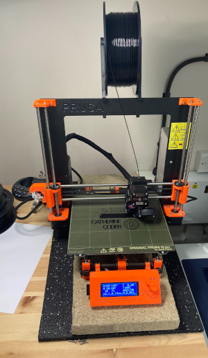

First, make the 3D coder keyring project from the code club site.
Next you can make you own design of key ring, which we will 3D print. You might like to make one with your name, or you may have another idea - it's up to you. You could make:

The best design will depend on the letters in your design and the font you choose.
Your key ring will be printed on a 3D printer.
